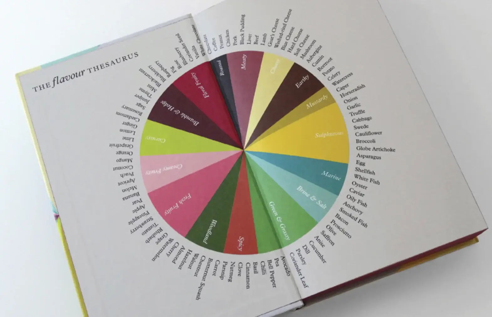
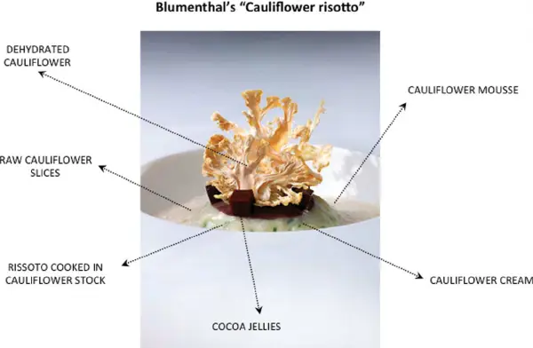
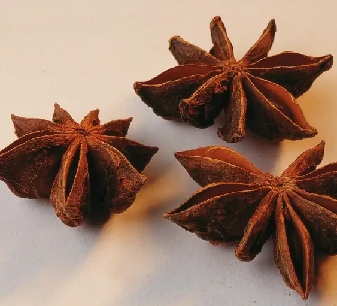

The Flavour Thesaurus is a book by Niki Segnit that pairs up 99 ingredients in a delicious series of flavour combinations. Some pairings are all-time classics, many are creative, and a handful are in that sweet spot between intriguing and confusing.
If you've ever sipped your morning coffee while pondering what to do with that extra avocado, the Flavour Thesaurus is the book for you. It suggests whizzing them together in a blender with milk and sugar for a creamy coffee shake.
(If you like the sound of that, immediately book a flight to Vietnam, Indonesia and/or the Philippines, where you’ll be in good company.)

This interactive story explores the Flavour Thesaurus in a never-before-seen way. Keep scrolling to go on a visual safari through this menagerie of flavours.
The Flavour Thesaurus offers 1,089 flavour pairings between 99 ingredients.
There are 16 categories of ingredient:
Tap on the circles to see the names and categories of each ingredient.
Let’s explore chocolate.
Chocolate pairs with 39 other ingredients.
TapHover over each circle to see what they are.
Chocolate goes well with obvious things like cinnamon.
But also pairs with seemingly odd choices, such as cauliflower or bacon.
Heston Blumenthal’s restaurant The Fat Duck used to serve a cauliflower risotto with chocolate jelly…
In 2013, this dish even featured in a scientific paper called Science and Technology for New Culinary Techniques
:

Some ingredients are paired more often than others.
Here are the 99 ingredients again. The size of each circle represents its number of pairings.
Shellfish is the most popular ingredient, with 51 pairings…
… closely followed by beef and pork, with 48 pairings apiece.
Swede has the fewest pairings, with just 7 other ingredients: anise, beef, carrot, lamb, nutmeg, pork, and potato.
Apple deserves a special mention.
Although apple isn’t the most popular ingredient—barely squeaking into the top 20, based on number of pairings—it goes with every type of flavour, whether sulphurous, spicy, or citrussy.
Some flavours are often paired with the most popular ingredients.
Anise is one. A veritable—and literal—star among other star ingredients.

In the book, Niki Segnit describes anise as a very combinable flavour.
It appears in star and seed form, in liquorice, fennel, and herbs like tarragon and chervil. Even some varieties of basil have liquorice notes (Thai basil in particular).
If you’re a fan of oysters, you could try adding a dash of tarragon vinaigrette.
Apparently anise seeds and lemon play nicely together in biscotti.
The Flavour Thesaurus calls pastis—the anise-y aperitif—an odd but successful match for lemon in a sorbet.
Even the relatively unpopular swede has a friend in anise.
The Flavour Thesaurus recommends Hugh Fearnley-Whittingstall’s leftover goose pasties, which sound superb even to an anise-skeptic like me.
Anise has pairings
The pairings of ingredients in the Flavour Thesaurus can be treated as a ‘social network’, which, gleefully, means you can analyse them statistically. After extracting the flavour combinations from a (legally obtained!) copy of the e-book, I ran some standard social network analysis methods, for example calculating an ingredient’s ‘popularity’ based on its degree (the number of connections it has to other ingredients), and finding the ‘star’ among star ingredients using measures of centrality such as eigenvector centrality.
All the code is on GitHub and released under a permissive license, should you wish to play about with it.
The Flavour Thesaurus is a trademark of Niki Segnit. The choice of ingredients and their pairings are her intellectual property, and she owns the copyright to the content of the Flavour Thesaurus. This interactive story simply showcases her work—and the sheer amount of effort she would’ve put into compiling it—in a snazzy and hopefully interesting way.
You can find more of my nerdery at matthewgthomas.co.uk.